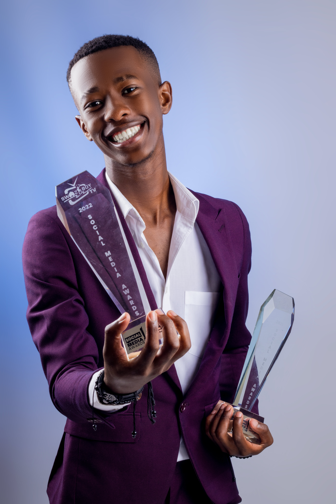

PORTFOLIO


Christian has uplifted the poetry industry in Eswatini beyond measures. And in doing so, his talent has attracted a lot of clients around the world! Ever since he started his career he has been booked by companies, institutions, organisations, elite individuals etc... If you are interested in booking Christian, get in touch by sending an email to christianmaz30@gmail.com. Please refer to the updates first before booking!
Christian is multi-talented, and he has captured a larger audience with his charisma as an MC in both public and private events. He has been an MC for nearly five years now, in tones of shows and events. His motivations shone through during his speeches and interviews which are currently available on youtube in his channel. You can book Christian to be an MC or Motivational speaker to your event through the following Contacts: dial +268 7846 4103 or use the email provided. Don't forget to check the Recent Updates before booking.
The Christian-maz brand has been trending in past few years, it still is. Christian's ability to promote his owm brand attracted a lot of business opportunities and now he is is the brand ambassador to a number of esteemed institutions e.g Nercha and other labels that are recognised globally. He has worked with quite a lot of big companies like MTN and Eswatini Mobile in promoting their agender. If you want to promote your own brand or upcoming event, just slide through the emails provided. Don't forget to check his socials and the Recent Update tab so you could explore his latest!